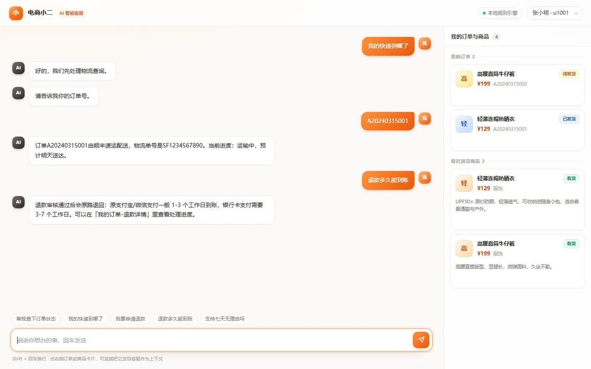

这是跑起来的界面
本地实例直接截屏，没有后期修图，地址条就是当时的地址。
本机 127.0.0.1:18082

问「我的快递到哪了」，先追问订单号；拿到 A20240315001 后走物流流程，回的是中台里的真实轨迹。接着问「退款多久能到账」，自动切到知识轨道，把 1-3 / 3-7 个工作日这条口径直接答出来。右上角标签写着「本地规则引擎」——这次没填 API Key，三条轨道走的仍是真实链路，不是写死的对白。
主链路
链路图里的每一格都来自仓库代码或 README，不按印象画。
on_duplicate_key_update 与 SQLite 的 on_conflict_do_update 语法不通用，按方言分支构造
这个系统在哪几行是主力
与首页 03 节是同一张表，这里只截出本项目这一列。没做过的格子标「–」。
口径与首页一致
●主力实现 ◐有实现，非重点 ○仅基础形态 –未涉及
在自己机器上跑一遍
下面是从零拉起这个系统要的东西。缺依赖时链路会明确失败，不返回编造的结果。
python start.py- Python 3.12+
- LLM 网关与 Key（可选）
五个项目里唯一不用外部服务的：SQLite 首次启动自动建表并灌演示数据，不用装 MySQL、不用跑建表脚本。start.py 同时拉起模拟电商中台（18081）与客服后端（18082）。填了 LLM_API_KEY 才走真模型；不填也能完整演示——infrastructure/llm.py 按同一套 BaseChatModel 接口实现了规则引擎，三条轨道、多轮补槽、挂起恢复都照常跑，只是措辞不如真模型灵活。
这个系统跑不到哪
能跑的部分写清楚，跑不动的部分也写清楚。以下是当前真实状态，不是「后续规划」。
没有在线 demo
后端要跑两个 Python 进程，静态托管放不下，所以给的是 python start.py 这条路径，不是一个点开就能用的链接。反过来说它是五个项目里依赖最少的：只要有 Python，不需要数据库、不需要 Docker。
没有 pytest 套件
只有 smoke_test.py 一个端到端脚本：27 项断言、8 组场景，全部走真实 HTTP，但没有接进 pytest，也没有进 CI。改完代码是否回归，得手动跑一遍。
不填 Key 时是规则引擎
没配 LLM_API_KEY 时，规划、知识作答、澄清、闲聊四类输出由内置规则引擎生成，全链路能跑通但措辞机械。填了 Key 才叫大模型在跑——这个区别页面上不糊弄。
FAQ 与 RAG 是内置语料
knowledge/providers.py 里 FAQ 与 RAG 两类 provider 是占位实现：按关键词在内置语料里召回，不是向量库检索。要真实检索得替换 retrieve 实现，接口已经留好。
没有性能数字
未做并发压测，因此不写 QPS、P95、错误率；也没有覆盖率报告。要这些数字得先搭压测环境。
没有容器化与 CI
仓库里没有 Dockerfile 也没有 compose，靠 start.py 在本机拉起两个进程；同样没有配置 GitHub Actions 之类的自动校验。